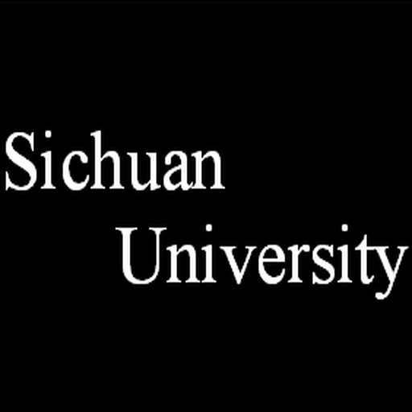

教育经历
2004年9月 - 2007年6月：乐山市一职中实验幼儿园
2007年9月 - 2013年6月：乐山市柏杨小学 5 班
2013年9月 - 2016年6月：乐山外国语学校 1 班 / 7 班
2016年9月 - 2019年6月：成都外国语学校 3 班
2019年9月 - 2020年6月：四川大学电子信息学院 电子信息类 7 班
2020年9月 - 2023年6月：四川大学电子信息学院 光电信息科学与工程 5 班（学士）
2023年9月 - 至今：四川大学电子信息学院 光学工程（博士生）
个人爱好
游戏
FPS
无畏契约 Valorant
CSGO Counter-Strike: Global Offensive
钓鱼
俄罗斯钓鱼4 Russian Fishing 4
钓鱼星球 Fishing Planet
音游
Arcaea

Osu!
独立游戏：
星露谷物语
运动
网球
羽毛球
象棋
研究领域及成果
2021年9月 - 2022年2月：非平面全息 (王君老师组)
Python 利用计算全息D-FFT对柱面全息图进行模拟仿真
Optical realization of 360° cylindrical holographyOptics Express 四作
2022年9月 - 2024年6月：衍射透镜 波带片 多级衍射透镜(李磊老师组)
对透镜面型(环带高度/宽度)进行优化以实现焦点调控 消色差/长焦/多焦
Varifocal diffractive lens based on microfluidicsOptics and Lasers in Engineering 四作
Meta-Device for Field-of-View Tunability via Adaptive Optical Spatial DifferentiationAdvanced Science 三作
2024年3月 - 至今：弹性体器件 介电弹性体 可调谐器件(李磊老师组)
硬件 丙烯酸、硅橡胶等材料在光学中的应用 包括光束控制和焦点控制
Dielectric elastomer-based laser pointing control system for UV to NIR laserOptics & Laser Technology 一作
荣誉奖励
学生奖励
2019-2020学年四川大学优秀学生
2019-2020学年四川大学综合三等奖学金
2020-2021学年四川大学优秀学生干部
2020-2021学年四川大学单项二等奖学金
2023届四川大学优秀毕业生
2023-2024学年四川大学优秀研究生
2024-2025学年四川大学优秀研究生
比赛获奖
乐山市市中区中小学生象棋比赛第一名
“挑战杯”四川大学2020-2021年学生科技节之“麦格米特杯”科技创新大赛二等奖
第十届全国大学生光电设计竞赛全国二等奖（创意组）
第三届国际计算成像会议CITA优秀张贴海报